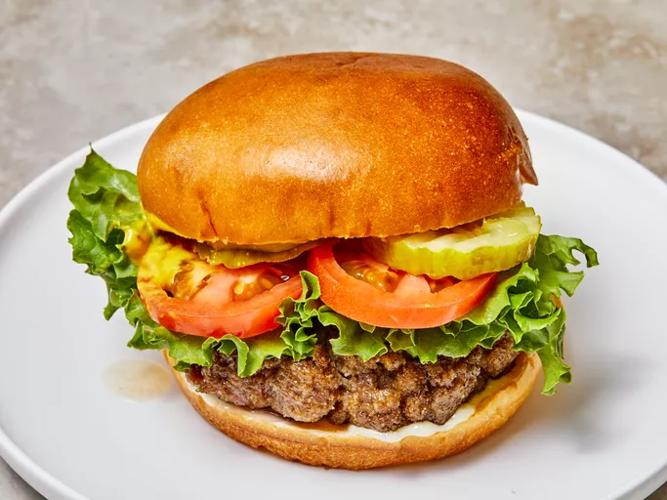

Cheeseburguer

This hamburger recipe uses evaporated milk, eggs, and bread
crumbs to create incredibly juicy and flavorful hamburger patties
that will rival your favorite burger joint.
Ingredients
- 2 pounds ground beef
- 1 egg, beaten
- 3/4 cup dry bread crumbs
- 3 tablespoons evaporated milk
- 2 tablespoons Worcestershire sauce
- 1/8 teaspoon cayenne pepper
- 2 cloves garlic, minced
Steps
- Gather all ingredients.
- Preheat grill for high heat
- Mix the ground beef, egg, bread crumbs, evaporated milk, Worcestershire sauce, cayenne pepper
and garlic in a large bowl using your hands.
- Form the mixture into 8 hamburger patties.
- Lightly oil the grill grate. Grill patties until browned and no longer pink, about 5 minutes per side.
- Serve hot and enjoy!